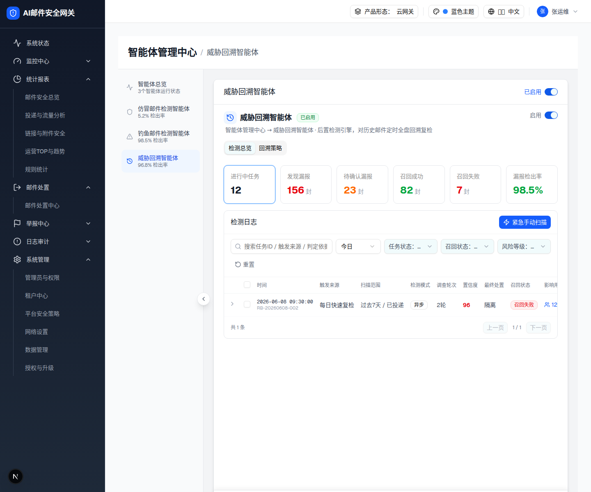
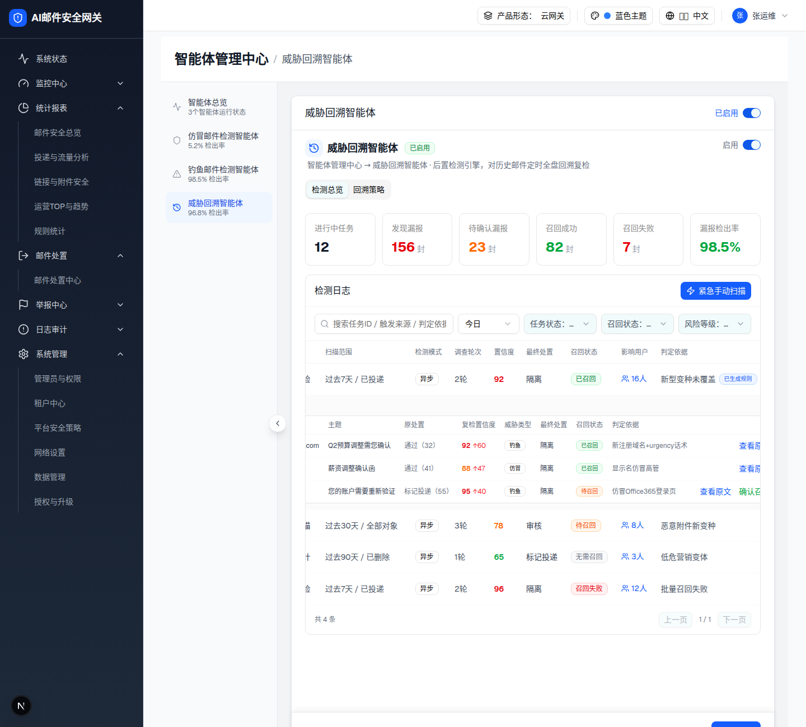

| 所属组件 | 2.3 KPI 卡片区 / 2.5 任务表格 |
| 主文件 | index.html |
| 触发路径 | 点击可下钻 KPI 卡片 → toggleKpi(k)；点击行首 Chevron / “查看漏报” → 展开 leaks 明细 |
| demo 源 | KPI 382-389；下钻联动 352-358；展开明细 511-566 行 |
进行中任务
12
发现漏报
156封
待确认漏报
23封
召回成功
82封
召回失败
7封
漏报检出率
98.5%
| 时间 | 触发来源 | 扫描范围 | 检测模式 | 调查轮次 | 置信度 | 最终处置 | 召回状态 | 影响用户 | 判定依据 | 操作 | ||
|---|---|---|---|---|---|---|---|---|---|---|---|---|
2026-06-08 02:00:12 RB-20260608-001 | 每日快速复检 | 过去7天 / 已投递 | 异步 | 92 | 隔离 | 已召回 | 新型变种未覆盖已生成规则 | |||||
2026-06-07 02:00:08 RB-20260607-003 | 每周深度扫描 | 过去30天 / 全部对象 | 异步 | 78 | 审核 | 待召回 | 恶意附件新变种 | |||||
2026-06-06 02:00:15 RB-20260606-002 | 月度合规审计 | 过去90天 / 已删除 | 异步 | 65 | 标记投递 | 无需召回 | 低危营销变体 | |||||
2026-06-08 09:30:00 RB-20260608-002 | 每日快速复检 | 过去7天 / 已投递 | 异步 | 96 | 隔离 | 召回失败 | 批量召回失败 |


| 时间 | 触发来源 | 扫描范围 | 检测模式 | 调查轮次 | 置信度 | 最终处置 | 召回状态 | 影响用户 | 判定依据 | 操作 | ||||||||||||||||||||||||||||||||||||||||||
|---|---|---|---|---|---|---|---|---|---|---|---|---|---|---|---|---|---|---|---|---|---|---|---|---|---|---|---|---|---|---|---|---|---|---|---|---|---|---|---|---|---|---|---|---|---|---|---|---|---|---|---|---|
2026-06-08 02:00:12 RB-20260608-001 | 每日快速复检 | 过去7天 / 已投递 | 异步 | 92 | 隔离 | 已召回 | 新型变种未覆盖已生成规则 | |||||||||||||||||||||||||||||||||||||||||||||
漏报邮件明细（共 3 封）
| ||||||||||||||||||||||||||||||||||||||||||||||||||||
2026-06-07 02:00:08 RB-20260607-003 | 每周深度扫描 | 过去30天 / 全部对象 | 异步 | 78 | 审核 | 待召回 | 恶意附件新变种 | |||||||||||||||||||||||||||||||||||||||||||||
2026-06-06 02:00:15 RB-20260606-002 | 月度合规审计 | 过去90天 / 已删除 | 异步 | 65 | 标记投递 | 无需召回 | 低危营销变体 | |||||||||||||||||||||||||||||||||||||||||||||
2026-06-08 09:30:00 RB-20260608-002 | 每日快速复检 | 过去7天 / 已投递 | 异步 | 96 | 隔离 | 召回失败 | 批量召回失败 | |||||||||||||||||||||||||||||||||||||||||||||
| KPI key | matchKpi 条件 | 命中任务 |
|---|---|---|
| running | status==="running" | RB-20260608-002（1 条） |
| leaks | leaks.length>0 | 全部 4 条 |
| pending | recallStatus==="pending_recall" | RB-20260607-003（1 条） |
| recalled | recallStatus==="recalled" | RB-20260608-001（1 条） |
| failed | recallStatus==="recall_failed" | RB-20260608-002（1 条） |
再次点击同一卡片取消下钻（activeKpi 置 null）。下钻与搜索/多选/时间筛选是 AND 组合叠加。
| 比对项 | demo 实际 DOM（提取） | 预览 HTML | 一致 |
|---|---|---|---|
| KPI 网格 | div.grid.grid-cols-2.md:grid-cols-3.lg:grid-cols-6.gap-3（6 卡，前 5 role=button） | 真实提取 DOM | ✅ |
| 激活卡片 | +border-blue-400 ring-1 ring-blue-200（active） | JS 加同款 class | ✅ |
| “重置” | 仅 filterActive 时渲染（RotateCcw + “重置”） | JS 下钻时显示 ↺ 重置 | ✅ |
| 过滤后行数 | running→1、leaks→4、pending/recalled/failed→1 | JS 按任务ID映射过滤真实行 | ✅ |
| 漏报明细表 | table 10 列（时间/发信人/主题/原处置/复检置信度/威胁类型/最终处置/召回状态/判定依据/操作） | 真实提取 DOM（RB-20260608-001 的 3 封漏报） | ✅ |
| 置信度增量 | span.text-red-500 “↑{recheck-original}” | 真实提取 DOM | ✅ |